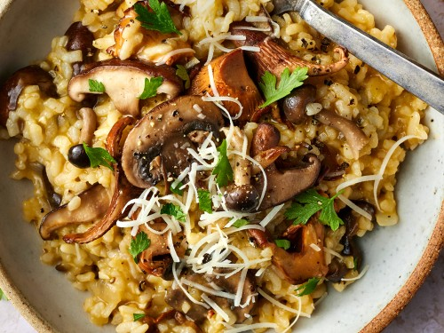

Home
Mushroom Risotto

Description
Risotto is a classic Italian dish known for its rich, creamy texture and deep flavors. Made with short-grain rice varieties like Arborio or Carnaroli, risotto is cooked slowly with broth, wine, and aromatics until it reaches a silky, spoonable consistency. Each grain absorbs the flavors while maintaining a slightly firm bite at the center, creating a unique blend of textures and tastes.
The beauty of risotto lies in its versatility—it pairs beautifully with an array of ingredients, from earthy mushrooms and fresh herbs to delicate seafood and seasonal vegetables. A finishing touch of butter and Parmesan cheese adds a luxurious creaminess that makes it perfect for both cozy dinners and elegant gatherings.
Ingredients
- 1 cup Arborio or Carnaroli rice
- 4 cups low-sodium chicken or vegetable broth, warmed
- 1 cup dry white wine
- 2 tablespoons olive oil
- 1 small onion, finely chopped
- 2 cloves garlic, minced
- 1 cup mushrooms, sliced (optional)
- 3/4 cup grated Parmesan cheese
- 2 tablespoons unsalted butter
- Salt and freshly ground black pepper, to taste
- Fresh parsley, chopped, for garnish (optional)
Method
- Warm the Broth: a small saucepan, heat 4 cups of broth over low heat. Keep it warm but not boiling.
- Sauté Mushrooms and Aromatics: In a large skillet, heat 2 tablespoons of olive oil over medium-high heat. Add 1 cup sliced mushrooms and cook until golden brown, about 5 minutes. Stir in 1 finely chopped onion and 2 minced garlic cloves, and cook until softened, about 2 minutes.
- Rice and Wine: in 1 cup Arborio rice and cook for 1-2 minutes, letting it absorb some of the oil. Pour in 1 cup of dry white wine, stirring frequently, until most of the wine is absorbed.
- Broth Gradually: Pour in a ladleful (about 1/2 cup) of warm broth, stirring frequently until the liquid is mostly absorbed. Repeat, adding a ladleful at a time, and continue stirring. This process should take about 15 minutes, or until the rice is creamy with a slight bite to it.
- Finish with Butter and Cheese: Once the rice reaches the desired consistency, remove from heat and stir in 2 tablespoons of unsalted butter and 3/4 cup grated Parmesan cheese. Season with salt and pepper to taste.
- Serve: Garnish with fresh parsley if desired, and enjoy your quick mushroom risotto!